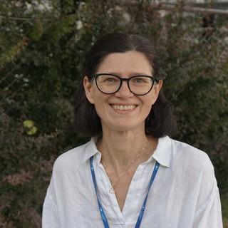

DICA

Associate Professor · DICA, Politecnico di Milano
My research activity focuses on aerobic and anaerobic biological processes applied to the treatment and valorization of wastewaters or organic wastes, including: optimization of biogas production via pretreatment, monitoring and mathematical modelling; digestate treatment and nutrient recovery; microalgal culturing on wastewater and on digestates from waste sludge or agro-wastes digestion.